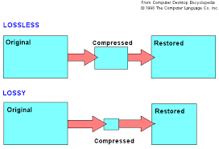

|
 |
Los algoritmos de compresión sin pérdida (o lossless compression en inglés) son métodos que reducen el tamaño de un archivo sin eliminar ningún dato. Esto significa que, al descomprimir el archivo, se puede recuperar exactamente la misma información original, bit por bit.
.Archivos de texto (documentos, código fuente)
.Imágenes (por ejemplo, PNG).
.Audio (por ejemplo, FLAC)
.Bases de datos
.Archivos comprimidos (.zip, .rar)
¿Cómo funcionan?
Estos algoritmos detectan patrones repetitivos o estructuras predecibles en los datos y las representan de forma más eficiente.
| Algortimo | Caracteísticas principales | Usos Comunes |
| Huffman | Usa árboles binarios para asignar códigos más cortos a los símbolos más frecuentes. | Usa árboles binarios para asignar códigos más cortos a los símbolos más frecuentes. | .
| LZW (Lempel-Ziv-Welch) | Construye un diccionario de cadenas repetidas para representar datos. | Formato GIF, TIFF, ZIP, PDF | .